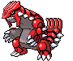
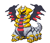
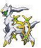

-
Suicune #245

- Água
Suicune incorpora a compaixão de uma fonte de água pura. Ele atravessa a terra com graciosidade. Este Pokémon tem o poder de purificar a água suja.
-
Tyranitar #248

- Pedra
- Escuridão
Extremamente forte, pode mudar a paisagem. É tão insolente que não se importa com os outros.
-
Salamence #373

- Dragão
- Voador
Ele voa em suas asas, que finalmente cresceram. Em sua felicidade, jorra chamas quentes, queimando tudo por onde passa.
-
Metagross #376

- Psíquico
Como os poderes magnéticos desses Pokémon ficam mais fortes em temperaturas congelantes, os Metagross que vivem em montanhas nevadas estão cheios de energia.
-
Kyogre #382

- Água
Através da Reversão Primal e com todo o poder da natureza, ele recuperará sua verdadeira forma. Ele pode convocar tempestades que fazem com que o nível do mar suba.
-
Groudon #383
- Terra
Groudon é dito ser a personificação da própria terra. As lendas falam de seus muitos confrontos contra Kyogre, pois cada um buscava ganhar o poder da natureza.
-
Rayquaza #384

- Dragão
- Voador
Dizem que Rayquaza viveu centenas de milhões de anos. Lendas permanecem de como ele pôs fim ao confronto entre Kyogre e Groudon.
-
Giratina #487
- Fantasma
- Dragão
Diz-se que este Pokémon vive em um mundo ao contrário do nosso, onde o conhecimento comum é distorcido e estranho.
-
Darkrai #491

- Escuridão
Ele persegue pessoas e Pokémon de seu território, fazendo com que eles experimentem um sono profundo e de pesadelo.
-
Arceus #493
- Normal
De acordo com as lendas de Sinnoh, este Pokémon surgiu de um ovo e moldou tudo o que existe neste mundo.